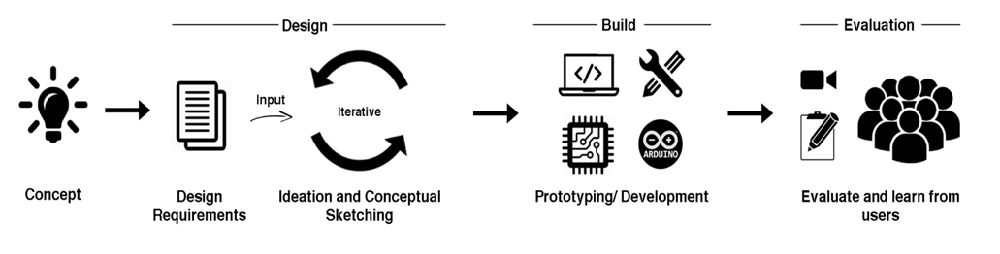
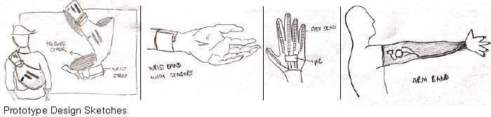
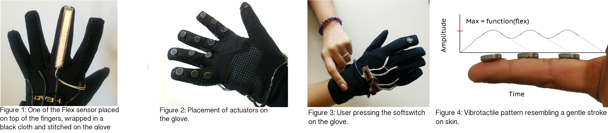
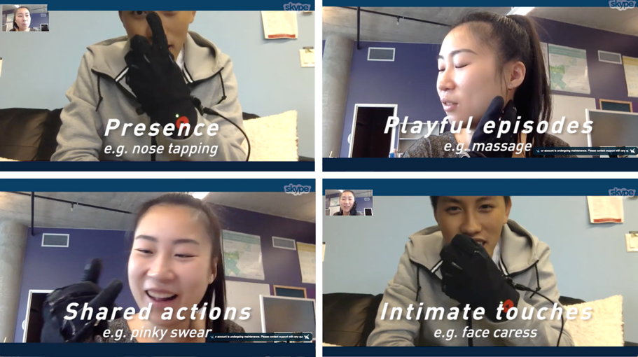

Flex-N-Feel: Emotive Gloves for Touch Over Distance
Description
A vibrotactile glove for long-distance couples which would capture the flex actions of fingers and transmit them to the other partner as vibrotactile sensations. When connected to Wi-Fi, the partner with the Flex glove can use their fingers to control the strength of the vibrations on the Feel glove. The vibrations progress linearly down the glove, imitating the feeling of a finger tracing down the skin.
Role
Interaction Designer
Developer
User Researcher
Collaborators
Yee Loong Ooi
Carman Neustaedter
Alissa Antle
Brendan Matkin
Media Coverage
Flex-N-Feel was widely covered by the social media and various news channel around the globe on Valentine's day 2017.


Publications:
Samarth Singhal, Carman Neustaedter, Yee Loong Ooi, Alissa Antle, Brendan Matkin (2017) Flex-N-Feel: The Design and Evaluation of Emotive Gloves for Couples to Support Touch Over Distances, Proceedings of the Conference on Computer Supported Cooperative Work and Social Computing.
Samarth Singhal, Carman Neustaedter, Alissa Antle, Brendan Matkin (2017) Flex-N-Feel: Emotive Gloves for Physical Touch Over Distance, Proceedings of the Conference on Computer Supported Cooperative Work and Social Computing.
CHALLENGE
In an increasingly globalized world, long-distance relationships are becoming more and more common. Couples could be separated for a long span of time mainly due to career or study related obligations, or frequently occurring short spans of time due to travel plans, long work hours or conflicting schedule shifts. Currently, these couples tend to rely heavily on video communication tools to support and maintain their relationships. yet the challenge is that these tools do not fully address the remote lovers’ needs that is the ability to touch and feel your partnerResearch Questions addressed:
RQ1: What design characteristics are important for facilitating a sense of touch between remote partners when using vibrotactile gloves?
RQ2: What are the kind of actions/interaction would couples perform and the associated meanings of these interactions?
RQ3: How video and audio connections support or hinder the use of Flex-N-Feel?
PROCESS
Design Requirements
I gathered my design requirements from the related work done in this field and from the needs and desires of couples in long-distance relationships.There were certain design requirements taken into account while designing this prototype:
- Mobility: The prototype to be able to be used by couples on the go, anywhere, and at any time of the day. This would help couples stay connected and feel each other’s presence at any point in time that they desired.
- Direct Mapping: The interactions were designed as such the interactions themselves would convey the partner’s intension, a touch. That is, I wanted a one-to-one mapping between a partner’s action and how it was received, rather than the action being abstracted.
- Flexible: I realized that couples are unique in terms of how they want to share touches with each other. As such, we wanted to design our prototype so that it could support a range of touches on different parts of the body.
- Private and Subtle: Touch between partners is sometimes an act that is meant to be private and unnoticed by others. For this reason, we wanted to select a sensory medium that would allow distance-separated couples to experience touch in a private and subtle manner, nearly invisible to the public
Next was the initial concept design phase where I poured my imagination and ideas into a tangible, coherent set of thoughts and sketches. I created multiple sketches of a wearable chest bag, wrist-band, gloves and an arm-band reflecting different ideas of how the system should look and slowly started incorporating the design requirements of the system into my sketches.

This was an iterative process where I sketched out several design ideas to improve the theme and usability of my system. Once this ideation and conceptual sketching phase were completed, I received feedback from my supervisor, course instructor, and lab members and incorporated them into my sketches.
Design Rationale
There were certain characteristics taken into consideration for each component of our prototype.- Form: I observed a touch is mostly initiated through hands in co-located couples and most obvious embodied wearable which came up to our mind was a glove. We selected a glove made of Lycra fabric, which has a soft texture and could emulate the human skin. Secondly, I selected a skinny fitted glove so that the tightness and warmth of the glove provides a sense of intimacy.
- Placement of Sensors: I placed the actuators on the palm side of the fingers to make sure that the touch is not limited to their hands only as shown in Figure 2.
- Mapping: I mapped three actuators to a finger based on the structure of the human finger. It is composed of three phalanx bones, you can see that through three joints and regions on your fingers. Every region has pulp of fleshy mass which is the first point of contact on any surface, and we mapped an actuator for each region.
- Vibrotactile Pattern: The flex actions were translated to vibrotactile sensations through a pattern which resembles the sensation of the fingers slowly moving down on your skin. We created this sensation by creating a waveform (as shown in Figure 4) in which the actuators reach their maximum amplitude and then slowly reduce it by transferring the sensation to the next actuator in a linear fashion. The maximum amplitude or the peak of the vibrotactile sensations was determined by the strength of the flex action of each finger transmitted through the flex glove.

OUTCOME
Design Evaluation
I adopted a qualitative approach to understand the meaningful qualities of Flex-N-Feel from users and how it can impact couples’ emotional. I designed a with-in-subject study that augmented the gloves with two communication modes, which are often used by couples in LDRs: voice calls and video communication.1. Interaction Themes
Through a careful examination of the audio and video recordings of their Flex-N-Feel usage, I found four main interaction themes emerge that reflected these values. We do acknowledge that some of the interactions are likely a result of the novelty of the technology where participants were exploring the design and ‘trying it out’ it out to see what was possible.
These were Shared actions, playful episodes, intimate touches, and presence.

The four categories we observed highlight the benefits of the open-ended design where couples appropriated the gloves to match their own needs, desires, and explorations for touch. We had wondered if the open-ended design of the gloves would cause confusion in participants where they might not know how they could make the design relevant for their communication.
2. Design Characteristics
Initiation: Couples felt it was easy to use and understand the LED status. It gave the couples the freedom to accept or reject the touch. a lot of couples found it useful who were living in different time zones and unaware of their partner’s routine.
Vibrotactile Pattern: Only Half of the couples were able to recognize the vibrotactile pattern. Most of the participants felt that the vibrations were too intense. They felt the intensity should be less and slower. The couples who recognized the pattern said it was monotonous after a while to feel the same pattern, and instead, the vibrations should travel from left to right ,top to bottom, upwards etc. But the interesting thing here was, The partner using the Feel glove typically figured out how to control the intensity (by pressing harder or softer on their body) and figured out the mapping of vibrations to individual fingers. We would recommend designers to give the option to the users to control the properties of these sensation based on the interactions with prototype.
We saw couples interacting with the glove in ways we as designers never envisioned. Although Flex_-N-Feel was open-ended and was able to transmit those interactions and the meaning to their partners. But there were some interactions which were not supported. Technically it's challenging to sense a large range of hand movements, especially since the dexterity of a human hand is enormous. Designers should consider sensing a more diverse set of interactions for sending remote touch over distance.